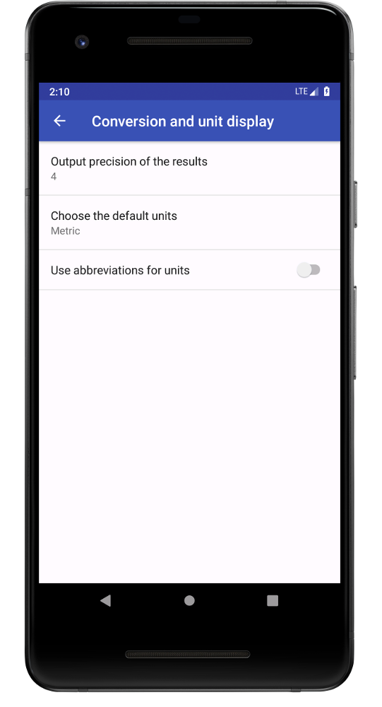

Android and Wear OS application for basic unit conversions
Everyday Converter is an easy to use application to convert between different units such as units of length, volume, time or weight. It is available for both Android on mobile phones or tablets and Wear OS for wearable devices and smartwatches.
Everyday Converter main user interface provides easy access to all unit categories.Everyday Converter Wear OS main user interface keeps a dark theme to conserve battery life.1
What is Everyday Converter?
Everyday Converter lets you convert between basic units used in everyday live. Currently, the categories are length, area, volume, time, speed, temperature, weight, and data storage. In each category, conversions between the the most common metric and imperial units are available. Ever wonder what the difference between a US pint and an imperial pint is? How many minutes there are in a day? What is an acre? Wonder no more! All these questions can be answered with the help of this easy to use application.Find a table of unit abbreviations at the bottom of this page.
Open the Everyday Converter on you phone or tablet and you will be provided with a well-structured overview of the unit categories available. Click on one of the category buttons to convert between the respective units.
Select the input unit, the one you want to convert from.
Enter a number in the top left corner
Scroll through the list to find the desired output unit
Now we can answer some of the questions we asked earlier. What the difference between a US pint and an imperial pint? From the example we can see that 1 imperial pint is equal to 1.2 US pint. So, next time you're at the pub, better order an imperial pint!
Settings

In the settings you can change the way Everyday Converter displays the conversion results. Currently, three settings can be adjusted.
Output precision of the results: Changes how many digits are shown
Default units: Controls the default input unit: If you are more likely to convert from metric to imperial units, choose metric. If you are more likely to convert from imperial to metric, choose imperial.
Use abbreviations for units: Choose to show only abbreviated units. Will show in instead of Inch, lb instead of Pound.
Unit information
Gives an overview of the unit categories. Also shows a lookup table for the abbreviations. This table can also be found at the bottom of this page. ↓
Wear OS application User Guide
Open the Everyday Converter app on your watch. You will see a scrollable list of unit categories, Length, Area, Volume, and so on.
Choose which type of units you want to convert
Select the input unit, the one you want to convert from.
Enter a number in the top left corner
Scroll through the list to find the desired output unit
In the Wear OS application units are always shown as abbreviations. This is due to the limited screen size of most wearable devices. Check this table to find out what each abbreviation stands for.
Unit Abbreviations
Units of Length
Unit
Abbreviation
Nanometer
nm
Micrometer
µm
Millimeter
mm
Centimeter
cm
Meter
m
Kilometer
km
Inch
in
Foot
ft
Yard
yd
Mile
mi
Units of Area
Unit
Abbreviation
Square centimeter
cm²
Square meter
m²
Are
a
Hectare
ha
Square kilometer
km²
Square inch
sq in
Square foot
sq ft
Square yard
sq yd
Acre
ac
Square mile
sq mi
Units of Volume
Unit
Abbreviation
Cubic centimeter
cm³
Milliliter
mL
Liter*
L
Cubic meter
m³
Cubic inch
cu in
Cubic foot
cu ft
Cubic yard
cu yd
US teaspoon
US tsp
US tablespoon
US tbsp
US fluid ounce
US fl oz
US legal cup
US cp
US liquid pint
US pt
US liquid quart
US qt
US liquid gallon
US gal
Imperial teaspoon
Imp. tsp
Imperial tablespoon
Imp. tbsp
Imperial fluid ounce
Imp. fl oz
Imperial cup
Imp. cp
Imperial pint
Imp. pt
Imperial quart
Imp. qt
Imperial gallon
Imp. gal
* 1 L = 1000 cm³
Units of Time
Unit
Abbreviation
Nanosecond
ns
Microsecond
µs
Millisecond
ms
Second
s
Minute
min
Hour
h
Day
d
Week
wk
Month
mo
Year
yr
Units of Speed
Unit
Abbreviation
Meter per second
mps
Kilometer per hour
kph
Foot per second
fps
Mile per hour
mph
Knot
kn
Units of Temperature
Unit
Abbreviation
Kelvin
K
Celsius
°C
Fahrenheit
°F
Units of Weight
Unit
Abbreviation
Microgram
µg
Milligram
mg
Gram
g
Kilogram
kg
Metric ton
t
Ounce
oz
Pound
lb
Stone
st
US ton
US ton
Imperial ton
Imp. ton
Units of Data Storage
Unit
Abbreviation
Byte
B
Kilobyte
kB
Megabyte
MB
Gigabyte
GB
Terabyte
TB
Petabyte
PB
Bit
bit
Kilobit
kbit
Megabit
Mbit
Gigabit
Gbit
Terabit
Tbit
Petabit
Pbit
1Thanks to danybony for providing this watch frame.